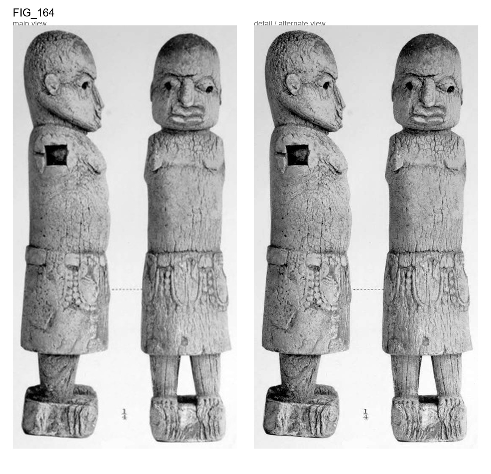

Carved ivory figure of a woman (?) standing, the arms deficient; They were fitted into squ
Carved ivory figure of a woman (?) standing, the arms deficient; They were fitted into square sockets on each side, and were fastened by large bronze nails, one of which remains. A row of five leopards' heads hanging from the waist-belt, edged with rows of pellets, or jDerhaps eyelets, but much defaced. The No tribal pupils of the eyes are represented by deep circular cavities. The whole of the marks apparent, the breasts are not large, but pendant. ivory is very much weathered and pitted, especially the legs and base. The figure was accompanied by another of the same size exactly like it and without arms, which was not purchased.